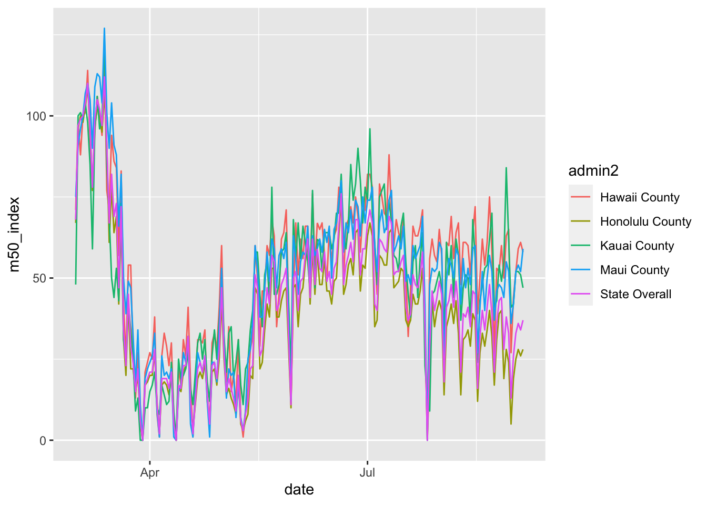
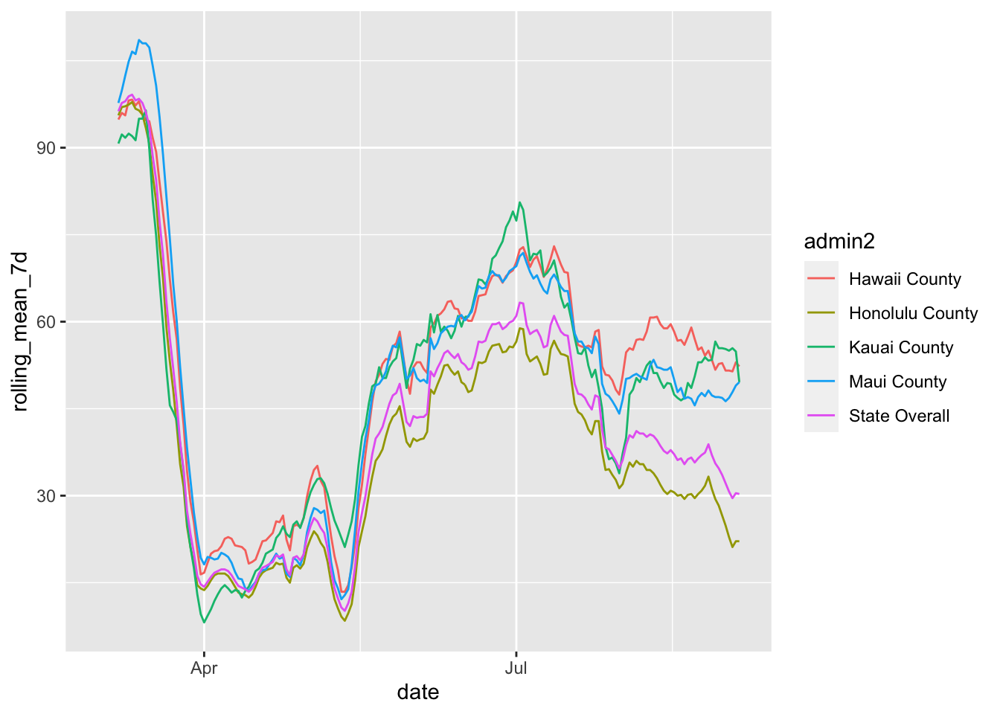
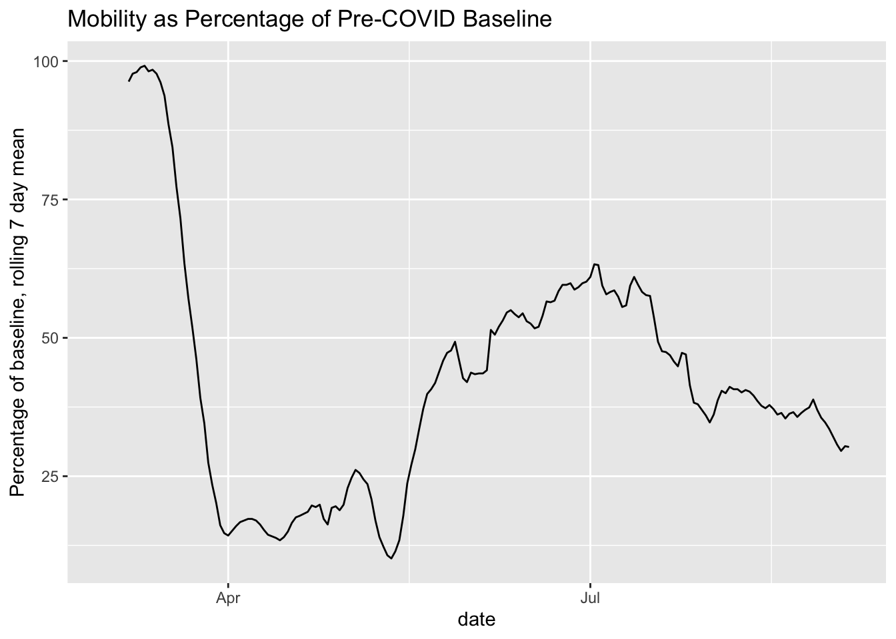
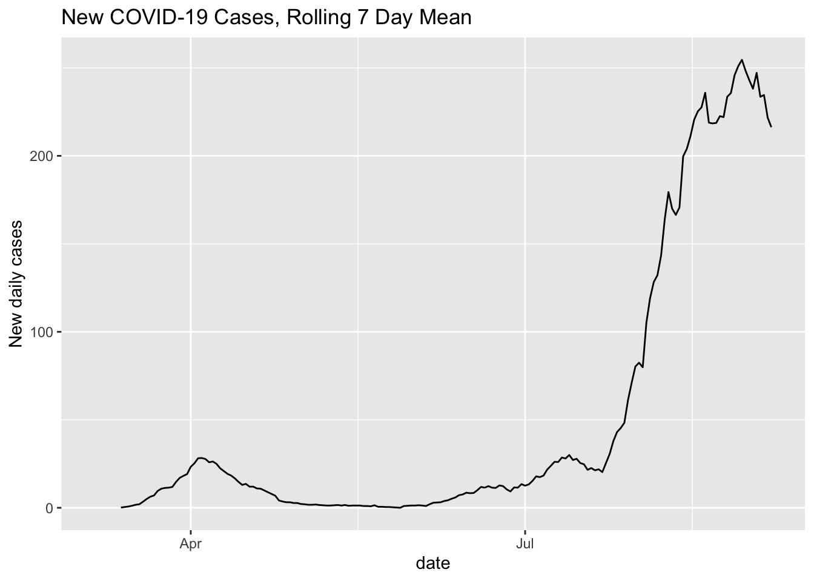

I was reviewing the coronavirus dashboard for the state of Hawaii. It has mobility data from anonymized cell phone records from Descartes Labs. The chart was so small that I couldn’t really read it, so I went to the source cited to see if I could see this better. At the source, they cite a Hawaii data project that looks at this data but something about the Hawaii data site isn’t working that great for the mobility visualization. I decided to see if I could write a script to visualize the Hawaii mobility data for myself.
library(tidyverse)## ── Attaching packages ────────────────────────────── tidyverse 1.3.0 ──## ✓ ggplot2 3.3.2 ✓ purrr 0.3.4
## ✓ tibble 3.0.3 ✓ dplyr 1.0.2
## ✓ tidyr 1.1.2 ✓ stringr 1.4.0
## ✓ readr 1.3.1 ✓ forcats 0.5.0## ── Conflicts ───────────────────────────────── tidyverse_conflicts() ──
## x dplyr::filter() masks stats::filter()
## x dplyr::lag() masks stats::lag()library(zoo)##
## Attaching package: 'zoo'## The following objects are masked from 'package:base':
##
## as.Date, as.Date.numericI downloaded the mobility data directly from Github.
mobility <- readr::read_csv('https://raw.githubusercontent.com/descarteslabs/DL-COVID-19/master/DL-us-mobility-daterow.csv')## Parsed with column specification:
## cols(
## date = col_date(format = ""),
## country_code = col_character(),
## admin_level = col_double(),
## admin1 = col_character(),
## admin2 = col_character(),
## fips = col_character(),
## samples = col_double(),
## m50 = col_double(),
## m50_index = col_double()
## )timestamp()## ##------ Mon Sep 7 14:10:12 2020 ------##After a little finessing, I was able to create the following curve. There are a lot of little peaks and valleys in the curve.
mobility %>% filter(admin1 == "Hawaii") %>%
mutate(admin2 = replace_na(admin2, "State Overall")) %>%
ggplot(aes(x= date, y = m50_index, color = admin2)) +
geom_line()
To help make these a little smoother, I took the 7 day average which gives a bit more distinction between the lines.
mobility %>% filter(admin1 == "Hawaii") %>%
mutate(admin2 = replace_na(admin2, "State Overall")) %>%
group_by(admin2) %>%
mutate(rolling_mean_7d = rollmean(m50_index, 7, align = 'right', fill = NA)) %>%
ggplot(aes(x= date, y = rolling_mean_7d, color = admin2)) +
geom_line()## Warning: Removed 30 row(s) containing missing values (geom_path).
For comparison to the number of cases per day, I pulled the NY Times data that I used in my first coronavirus post.
cases <- readr::read_csv("https://raw.githubusercontent.com/nytimes/covid-19-data/master/us-states.csv")## Parsed with column specification:
## cols(
## date = col_date(format = ""),
## state = col_character(),
## fips = col_character(),
## cases = col_double(),
## deaths = col_double()
## )I calculated the rolling 7 day mean as before.
cases %>% filter(state == "Hawaii") %>%
mutate(cases_yesterday = lag(cases)) %>%
mutate(new_cases = cases - cases_yesterday) %>%
mutate(rolling_mean_7d = rollmean(new_cases, 7, align = 'right', fill = NA))## # A tibble: 185 x 8
## date state fips cases deaths cases_yesterday new_cases rolling_mean_7d
## <date> <chr> <chr> <dbl> <dbl> <dbl> <dbl> <dbl>
## 1 2020-03-06 Hawa… 15 1 0 NA NA NA
## 2 2020-03-07 Hawa… 15 1 0 1 0 NA
## 3 2020-03-08 Hawa… 15 2 0 1 1 NA
## 4 2020-03-09 Hawa… 15 2 0 2 0 NA
## 5 2020-03-10 Hawa… 15 2 0 2 0 NA
## 6 2020-03-11 Hawa… 15 2 0 2 0 NA
## 7 2020-03-12 Hawa… 15 2 0 2 0 NA
## 8 2020-03-13 Hawa… 15 2 0 2 0 0.143
## 9 2020-03-14 Hawa… 15 4 0 2 2 0.429
## 10 2020-03-15 Hawa… 15 7 0 4 3 0.714
## # … with 175 more rowsCombining the Data
I was going to put these on the same graph, but after reading about why this can be misleading, I decided not to do it. To make it easier to compare, here are the two graphs in close proximity for visual comparison.
mobility %>% filter(fips == 15) %>%
mutate(rolling_mean_7d = rollmean(m50_index, 7, align = 'right', fill = NA)) %>%
ggplot(aes(x= date, y = rolling_mean_7d)) +
geom_line() +
ggtitle("Mobility as Percentage of Pre-COVID Baseline") +
ylab("Percentage of baseline, rolling 7 day mean")## Warning: Removed 6 row(s) containing missing values (geom_path).
cases %>% filter(state == "Hawaii") %>%
mutate(cases_yesterday = lag(cases)) %>%
mutate(new_cases = cases - cases_yesterday) %>%
mutate(rolling_mean_7d = rollmean(new_cases, 7, align = 'right', fill = NA)) %>%
ggplot(aes(x = date, y = rolling_mean_7d)) + geom_line() +
ggtitle("New COVID-19 Cases, Rolling 7 Day Mean") +
ylab("New daily cases")## Warning: Removed 7 row(s) containing missing values (geom_path).
It’s still a little hard to tell, but based on this, it seems that mobility is associated with an increase in infections, with the recent mobility declines being associated with a stable or falling new case count.
Licenses
Mobility data are licensed under a Creative Commons Attribution 4.0 International License, which requires attribution to “Descartes Labs.”
Cases data are from NY Times.